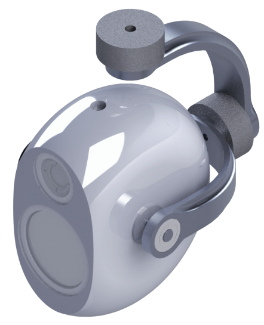
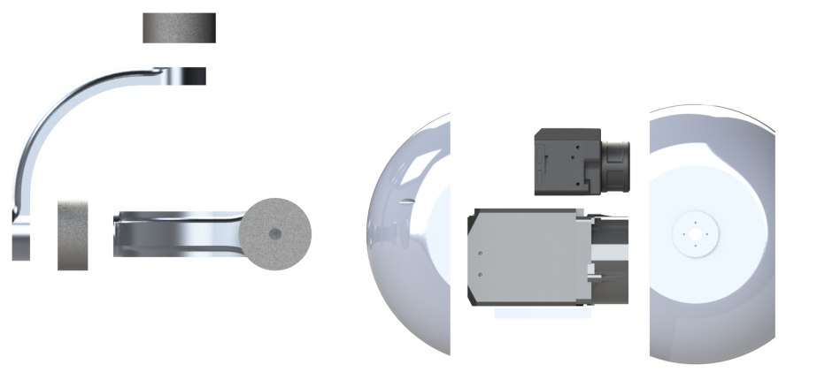

Custom Three-axis Gimbal
Alpinax, July 2016 - August 2016, Individual

The three-axis gimbal was designed to carry two cameras: a 12X optical zoom 4K camera for inspection, and a FLIR infrared thermal camera. The design requirements for the gimbal were:
- Gimbal must fully enclose cameras
- Gimbal must maintain structural integrity
- Gimbal must be balanced
- Gimbal must be light as possible
Cost as always was a concern for this project as well, especially because Alpinax was a small startup.
|  |
The main casing of the gimbal was designed to be SLS printed out of nylon. I chose SLS printing because of the complex nature of the print ~ even though the case consisted of two parts, there needed to be overhangs to create the aerodynamic shape. The arms of the gimbal were designed to be milled out of 6061 aluminum to meet the structural requirements at relatively low weight. All parts were toleranced according to their manufacturing method. All axes were balanced using the mass properties function to find the center of mass along each gimbal motor axis.